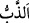

verdi. Öyle ise namazı kılın; zekâtı verin ve Allah’a sımsıkı sarılın. O, sizin
mevlânızdır. Ne güzel mevlâdır, ne güzel yardımcıdır!
“Ey insanlar! (Size) bir misal verildi;” Yâni size garip bir durum, ‘mesel/misal’ diye
isimlendirilmeyi hak eden, bütün ülkelerde ve asırlarda geçerli benzersiz bir kıssa
açıklandı. “Şimdi onu” yâni o misâli tedebbür ve tefekkür etmek üzere “dinleyin.” O
hâlde o meseli akıl kulağı ile dinleyin ve onun üzerinde düşünün.
et-Te’vîlâtü’n-Necmiyye’de der ki: “Cenab-ı Hak “Ey insanlar” sözü ile, gözle işin
hakîkatini görmeyi unutanlara işâret ediyor. Belki gaflet uykusundan uyanırlar diye
onlara bir misal vermek lâzımdır. Burada hitab, genel olarak mîsakda verdiği sözü
unutan herkese, özel olarak da “şimdi onu dinleyin” hitabını anlayıp idrâk etmeleri için
dinleyenlere ve istîdadlı olanlaradır. Bu emir bir emr-i tekvînîdir. Hitabı işitip
öğütlenmeleri istenmektedir. Sonra Cenab-ı Hak mânâyı beyan etti ve şöyle buyurdu:
“Allah’ı bırakıp da yalvardıklarınız” yâni Allah Teâlâ’ya ibâdeti bir tarafa bırakarak
kendilerine taptığınız putlar, demektir. Bu ifâde misali açıklamakta ve tefsir etmektedir.
Kâşifî der ki: “Beytullahın etrafına konmuş olan putların sayısı üç yüz altmış idi. Hak
Teâlâ buyurur: Allah’ın dışında taptığınız bütün bu putlar…”
et-Te’vîlâtü’n-Necmiyye’de der ki: “Allah’ı bırakıp da” yâni, açık ve gizli türlü
putlardan kendilerine “yalvardıklarınız”
“Bunun için bir araya gelseler bile bir sineği dahi yaratamazlar.” Yâni bir sinek
yaratmak için bir araya gelseler ve yardımlaşsalar bile onu yaratmaya güç yetiremezler.
Kaldı ki bu işi tek tek nasıl yapabilsinler?! Sinek küçük ve hakir olduğu halde asla onu
yaratamazlar
“__WORD__ kelimesi “__WORD__ndendir. Yâni o menedilir ve uzaklaştırılır. el-Müfredât’ta der
ki: “__WORD__, uçan haşarattan bilinen hayvana (sineğe), arılara, eşek arılarına verilen
isimdir. Ancak bu âyette kasdedilen hayvan bilinen sinektir.
Hayâtü’l-hayevân’da der ki: “Bir hadîste: “Sinek cehennemdedir, arı ise değil.”[51]
buyrulmuştur. Sinek kokuşmuş şeylerden meydana gelir. Göz bebekleri küçük olduğu
için göz kapakları yaratılmamıştır. Göz kapaklarının görevlerinden birisi de göz
bebeğini tozdan korumak ve onu cilâlamaktır. Allah ona iki el vermiştir, onlarla göz
bebeğini temizler ve cilâlar. Bunun için sineğin devamlı olarak ellerini gözlerine
sürdüğünü görürsünüz. Ev kabak yaprağı ile tütsülendiğinde sinek orada eğleşemez.”
“Sinek onlardan bir şey kapsa,” alıp götürecek olsa, çok zayıf olmasına rağmen âciz
kaldıkları için “bunu ondan geri de alamazlar.” Bir şeyi kurtaramazlar, yani o şeyi geri
alamazlar. Denilir ki: Putperestler putlara güzel koku ve bal sürerler, üzerlerine de
kapıları sıkıca örterlerdi. Ama sinekler yine de ufak bir delik bulup oradan girer ve
onları yerdi.
Kâşifî der ki: “Onların âdeti şöyle idi: Putlara bal ve kokulu şeyler sürerler,